自二零零六年三月以来，中共活体摘取法轮功学员器官牟取暴利的黑幕在国际上被撕开。这场由中共前党魁江泽民下令进行的，由中共政府、军队统一管理，从监狱、法院、医院形成一条龙的秘密大屠杀，是对全人类的犯罪，是人类前所未有的罪恶，冲击着每一个人的良知，挑战着每一个人的道德底线。在这大善大恶面前，每一个人都应该站起来维护人类的尊严，谴责中共对人类犯下的滔天大罪。
自中共活摘器官的黑幕被曝光之后，尤其是王立军叛逃、薄熙来被抓之后，当今世界很多正义人士和国家，都在纷纷谴责中共的罪恶，江泽民等迫害元凶已经在世界上几十个国家被起诉。善恶有报，天网恢恢，所有参与迫害的恶人都将受到历史的审判。
中共活体摘取法轮功学员器官的犯罪流程
1、下班途中，遭绑架自中共活摘器官的黑幕被曝光之后，尤其是王立军叛逃、薄熙来被抓之后，当今世界很多正义人士和国家，都在纷纷谴责中共的罪恶，江泽民等迫害元凶已经在世界上几十个国家被起诉。善恶有报，天网恢恢，所有参与迫害的恶人都将受到历史的审判。 |
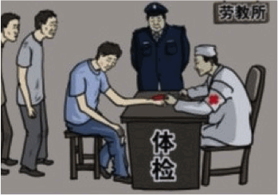
2、强制采血，建立活体器官库失去人身自由的法轮功学员被强制采血、验血，他们被用来建立活体器官库。 |
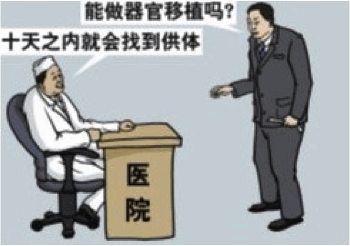
3、医院与劳教所、监狱勾结中共内部根据病人的情况，对活体器官库进行匹配，在短时间内可获得匹配的法轮功学员。 |
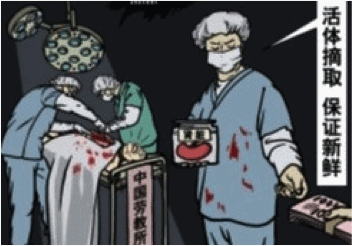
4、活摘器官中共把被匹配的法轮功学员押送到指定的医院，医生进行活体摘取器官。 |
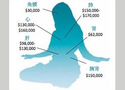
5、牟取暴利人体器官的价格：眼角膜：3万美元；肺：15万～17万美元；心：13万～16万美元；肾：6万2千美元；肝：9万8千～13万 美元；胰肾：15万美元。 |

6、焚尸灭迹中共把被活体摘取器官的法轮功学员焚尸灭迹。 |
中共对法轮功的迫害是活体摘取器官的根源
由于活体摘取法轮功学员的器官太过残忍，以致有些人不愿面对现实，难以相信；或者对中共认识不清、不相信中共会干出这么邪恶的事，也有些人想这到底是怎么回事呢？
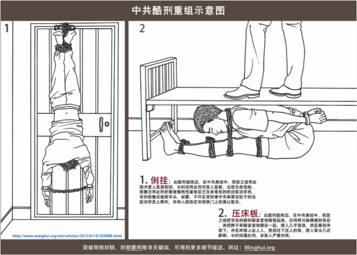• 江泽民密令对法轮功实行“名誉上搞臭，肉体上消灭，经济上搞垮”、“打死算自杀，不查身源，直接火化”、“怎么对法轮功都不过分” 的灭绝政策。中共的血腥迫害是活体摘取法轮功学员器官的前提。
• 法轮功祛病健身有奇效，法轮功学员的器官质量非常好，比关押在监狱、劳教所里的犯人的器官质量好很多。
• 人体器官昂贵，器官市场巨大，器官移植是暴利产业。
• 中共军委早有秘密政策，“阶级敌人”可作为工业原料。中共把法轮功作为头号“阶级敌人”，把法轮功学员不当人看。中共活体摘取法轮功学员的器官，不仅实现“肉体上消灭”，而且同时赚了大钱。
中共迫害法轮功后中国器官移植暴增
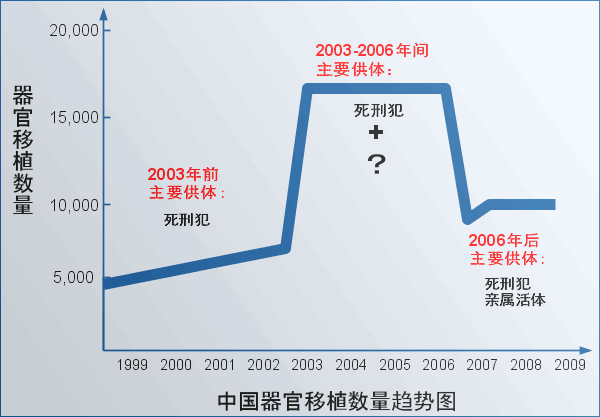中国器官移植数量从一九九九年开始上升，和从一九九九年中共迫害法轮功同步，在二零零三年～二零零六年期间暴涨，达到高峰（见上图）。二零零五年十二月七日，中国卫生部副部长蒋作君在“卫生技术评估与管理工作研讨会上的讲话”中说：“在数量上，我国已成为仅次于美国的第二大器官移植大国。”
中国在短时间内成为器官移植大国，但是中共声称的器官来自死刑犯根本解释不了这些数量庞大的器官移植。
中国医院器官等待时间之短超乎寻常 — 必有大量活体器官随要随到
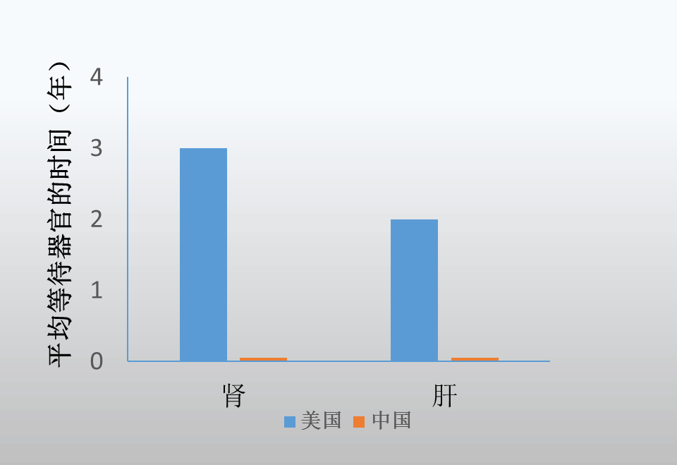 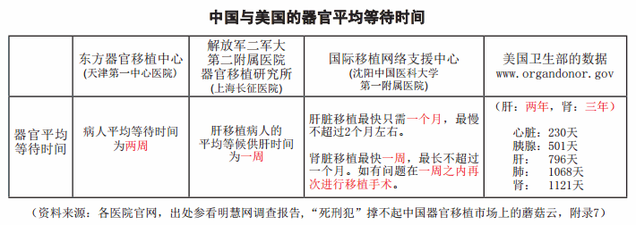在中国，医生在短时间内做大量器官移植手术；多台器官移植手术同时进行；超短的等待时间（见上图），表明有大量活体器官随要随到。
军方统一管理的巨大法轮功学员活体器官库
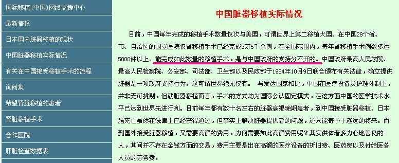设在沈阳的国际移植网络支援中心网站称：“能完成如此数量的移植手术，是与中国政府的支持分不开的”。（上图是二零零六年的网络截图）
• 知情人披露有三十六个关押法轮功学员的集中营。许多去北京为法轮功上访的法轮功学员，为了不给当地带来麻烦，不报姓名。这些法轮功学员被抓捕后，被集中关押，形成了集中营，受到军事管制，与外界隔绝。许多学员被活摘器官后焚尸灭迹，从而在人间消失。
• 中共以军队为支柱的国家政权成为世界上最大的盗取人体器官的犯罪集团。中国军队医院、武警医院广泛参与活摘法轮功学员器官，一百五十多家部队医院中，绝大部份都开展了器官移植，而且器官移植数量惊人，成为活摘法轮功学员器官主力（一些地方医院也参与），活摘器官是中国军队（总后勤部）管理的血腥产业。
• 对法轮功学员进行全国统一调度、统一配型，活体运输，器官移植不受地区和时间限制，中国很快成为国际器官移植旅游最大地方。
• 中共军队统一管理，容易保密。
多方调查证实中共活摘法轮功学员器官
被关押在劳教所、监狱等场所的法轮功学员被普遍体检、抽血（其他被关押的人员则没有体检、抽血）。抽血化验是器官匹配的关键一环。
| 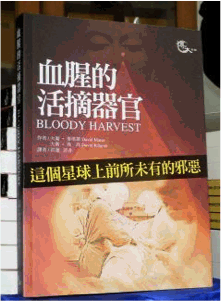 | 二零零六年，加拿大著名人权律师大卫•麦塔斯（David Matas）和加拿大前亚太司司长大卫•乔高（David Kilgour）共同编写《血腥的器官摘取》的研究报告，用52种证据方法对比、验证，证明活摘法轮功学员器官的存在，并称中共活摘法轮功学员的器官是“这星球上前所未有的邪恶”。 |
| 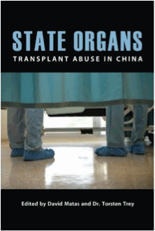 | 二零一二年十月，由加拿大著名人权律师大卫•麦塔斯（David Matas）和Torsten Trey医生共同编辑，在来自世界各地医学界的专业人士们的共同努力下，出版和发行了揭露活摘器官的新书“State Organs”（《国家器官》）。 |
调查录音
调查录音：薄熙来说：江主席下的命令（活体摘除法轮功学员器官）
如果音頻无法播放，请尝试在线播放
下载 (2MB)
调查录音：李长春说：“周永康具体管这个事（活摘器官），他知道。”
如果音頻无法播放，请尝试在线播放
下载 (2MB)
调查录音：活摘现场持枪警卫证词
如果音頻无法播放，请尝试在线播放
下载 (4.9MB)
调查录音：驻北京丰台的解放军307医院移植科肾源联系人陈强强调他们是官方、警方、监狱一条龙的运作法轮功学员器官的交易，还可提供证明法轮功学员供体身份的材料
如果音頻无法播放，请尝试在线播放
下载 (6.1MB)
调查录音：锦州中级法院刑一厅警察说： “你那儿条件好了，我们估摸还能提供。”
如果音頻无法播放，请尝试在线播放
下载 (4.9MB)
调查录音：205医院泌尿外科主任陈荣山承认移植供体来自在押的法轮功人员，并经过了法院。
如果音頻无法播放，请尝试在线播放
下载 (2.7MB)
调查录音：陈荣山保证能保守摘取法轮功练习者器官做器官移植手术的机密。
如果音頻无法播放，请尝试在线播放
下载 (1.7MB)
美国国会343决议 谴责中国活摘器官
2016年6月13日，美国国会众议院一致通过了343号决议案，谴责中共强摘良心犯器官、要求中共立即停止迫害法轮功并释放关押的法轮功学员。
2016年9月12日，在欧洲议会全体会议上，欧洲议会主席舒尔茨宣布了48号书面声明，要求欧盟采取行动制止中共强摘器官。
据明慧网统计，自2015年5月至2016年10月25日，至少有20万9900多名法轮功学员及家属向中共最高司法机关控告迫害元凶江泽民，罪名包括“反人类罪”、“酷刑罪”和“种族灭绝罪”。在亚洲各地，有138万民众签名参与刑事举报江泽民的全球联署行动。
正义的浪潮不断推进，中共的迫害难以为继，中共在迫害中走向解体。
-文章内容选自 明慧网，更多内容请访问 minghui.org
主页 上级目录